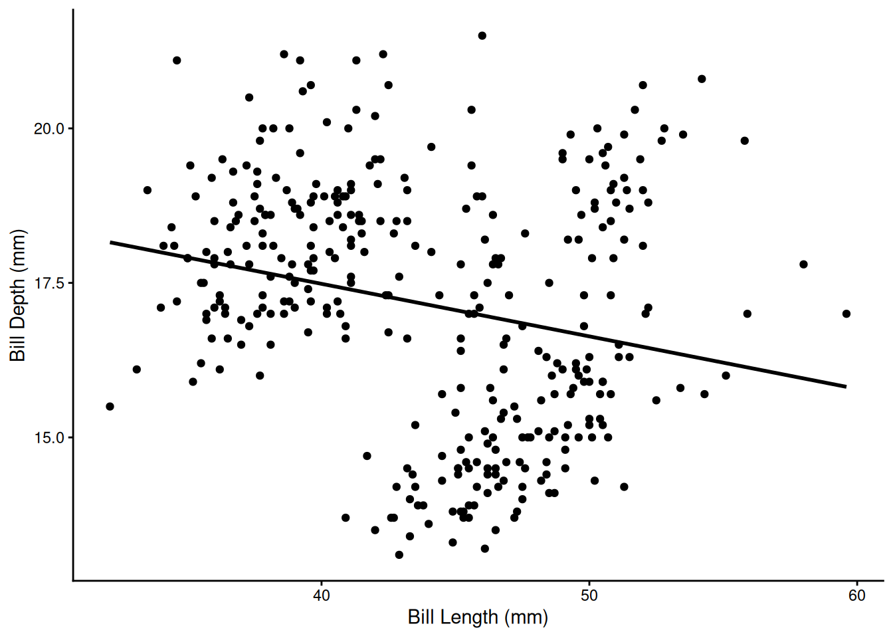

library(tidyverse)
library(palmerpenguins)Week 8 Assignment
Assignment Details
Purpose
The goal of this assignment is to practice problem decomposition and some best practices in reproducibility .
Task
Write R code to successfully answer each question below.
Criteria for Success
- Code is within the provided code chunks or new code chunks are created where necessary
- Code chunks run without errors
- Code chunks have brief comments indicating which code is answering which part of the question
- Code will be assessed as follows:
- Produces the correct answer using the requested approach: 100%
- Generally uses the right approach, but a minor mistake results in an incorrect answer: 90%
- Attempts to solve the problem and makes some progress using the core concept, but returns the wrong answer and does not demonstrate comfort with the core concept: 50%
- Answer demonstrates a lack of understanding of the core concept: 0%
- Any questions requiring written answers are answered with sufficient detail
Assignment Exercises
For many of the exercises in this week’s assignment, we will actually be using a lot of the code that you have already written for Assignment 7. This time, however, all of your file paths will be different…
1. Set-Up (20 pts)
Now that we are working outside of Posit Cloud, we will need to first install our packages onto your computer before we can load them with the library() function.
We use the install.packages() function to download the package from the internet and create a local copy. Unlike with the library() function, the package name needs to be inside quotation marks.
Insert a code chunk and (a) install and (b) load the palmerpenguins package. Since we already installed the tidyverse package during the lesson, you do not need to install it again. However, you do need to load it again.
Once you’ve installed palmerpenguins, comment out that line of code.
NoteImportant Note
If you haven’t already, make sure you are working in an RStudio Project!
Your project should have sub-directories for raw data, clean data, output, documents, and code. The naming convention for these folders is up to you.
Make sure that this Quarto file is in the appropriate sub-directory.
2. Portal Data Paths Review (20 points)
For this question, we are going to be using some of the code you’ve already written for Assignment 7, Question 2.
Click on the links below to download all 3 of the Portal files–surveys, species, and plots–from the internet onto your computer. They will likely end up in your Downloads folder, although your computer may have a different default location for downloaded files.
Then, move those three files from your Downloads folder into your equivalent of the raw data folder.
Before you begin, ensure that this assignment file is in your code (or equivalent) folder.
Now, let’s begin to code!
- Load the 3 data frames (surveys, species, plots) from your raw data folder into R using
read_csv(). Make sure your paths are relative, not absolute. - Copy the answers from Week 7 Assignment, Questions 2d-f, into the code chunk below.
- Save the output of the code from
2das a new data frame. Then, save that resulting data frame as a CSV file in your clean data sub-directory using thewrite_csv()function. - Save the ggplots from
2eand2finto your outputs folder using theggsave()function.
# read in the data
surveys <- read_csv('../data_raw/surveys.csv')
species <- read_csv('../data_raw/species.csv')
plots <- read_csv('../data_raw/plots.csv')
# d. Create a data frame with the `year`, `genus`, `species`, `weight` and `plot_type` for all cases where the `genus` is `"Dipodomys"`.
print("2d")[1] "2d"surveys %>%
inner_join(species, by = "species_id") %>%
inner_join(plots, by = "plot_id") %>%
select(year, genus, species, weight, plot_type) %>%
filter(genus == "Dipodomys")# A tibble: 16,167 × 5
year genus species weight plot_type
<dbl> <chr> <chr> <dbl> <chr>
1 1977 Dipodomys merriami NA Control
2 1977 Dipodomys merriami NA Rodent Exclosure
3 1977 Dipodomys merriami NA Long-term Krat Exclosure
4 1977 Dipodomys merriami NA Spectab exclosure
5 1977 Dipodomys merriami NA Spectab exclosure
6 1977 Dipodomys spectabilis NA Rodent Exclosure
7 1977 Dipodomys merriami NA Rodent Exclosure
8 1977 Dipodomys merriami NA Long-term Krat Exclosure
9 1977 Dipodomys merriami NA Control
10 1977 Dipodomys merriami NA Short-term Krat Exclosure
# ℹ 16,157 more rows# e. Make a scatter plot with `hindfoot_length` on the x-axis and `weight` on the y-axis. Color the points by `species_id`. Include good axis labels.
print("2e")[1] "2e"ggplot(data = surveys, mapping = aes(x = weight, y = hindfoot_length, color = species_id)) +
geom_point() +
scale_x_log10() +
labs(x = "Weight (g)", y = "Hindfoot Length (mm)")Warning: Removed 4811 rows containing missing values or values outside the scale range
(`geom_point()`).
# f. Make a histogram of weights with a separate subplot for each `species_id`.
# Do not include species with no weights.
# Set the `scales` argument to `"free_y"` so that the y-axes can vary.
# Include good axis labels.
print("2f")[1] "2f"surveys_with_weights <- filter(surveys, !is.na(weight))
surveys_with_weights# A tibble: 32,283 × 9
record_id month day year plot_id species_id sex hindfoot_length weight
<dbl> <dbl> <dbl> <dbl> <dbl> <chr> <chr> <dbl> <dbl>
1 63 8 19 1977 3 DM M 35 40
2 64 8 19 1977 7 DM M 37 48
3 65 8 19 1977 4 DM F 34 29
4 66 8 19 1977 4 DM F 35 46
5 67 8 19 1977 7 DM M 35 36
6 68 8 19 1977 8 DO F 32 52
7 69 8 19 1977 2 PF M 15 8
8 70 8 19 1977 3 OX F 21 22
9 71 8 19 1977 7 DM F 36 35
10 74 8 19 1977 8 PF M 12 7
# ℹ 32,273 more rowsggplot(data = surveys_with_weights, mapping = aes(x = weight)) +
geom_histogram() +
facet_wrap(~species_id, scales = "free_y") +
labs(x = "Weight (g)", y = "Number of Individuals")
3. Palmer Penguins and Path Files (20 points)
Like in Question 2 above, we will be recreating Question 4 from Week 7’s assignment but within our own RStudio Project. As a reminder, this is the question that used the palmerpenguins data.
The code chunk below uses the
download.file()function to go to a specific URL and then download the data at that URL. The location where the file is downloaded to is set by thedestfileargument.Modify the path in the
destfileargument for all three species datasets so that they are downloaded directly into your raw data folder (do not move them into the appropriate folder after the fact).
# Adelie penguin data
download.file(url = "https://pasta.lternet.edu/package/data/eml/knb-lter-pal/219/5/002f3893385f710df69eeebe893144ff",
destfile = "../data_raw/adelie.csv")
# Gentoo penguin data
download.file(url = "https://pasta.lternet.edu/package/data/eml/knb-lter-pal/220/3/e03b43c924f226486f2f0ab6709d2381",
destfile = "../data_raw/gentoo.csv")
# Chinstrap penguin data
download.file(url = "https://pasta.lternet.edu/package/data/eml/knb-lter-pal/221/2/fe853aa8f7a59aa84cdd3197619ef462",
destfile = "../data_raw/chinstrap.csv")
adelie <- read_csv("../data_raw/adelie.csv")Rows: 152 Columns: 17
── Column specification ────────────────────────────────────────────────────────
Delimiter: ","
chr (9): studyName, Species, Region, Island, Stage, Individual ID, Clutch C...
dbl (7): Sample Number, Culmen Length (mm), Culmen Depth (mm), Flipper Leng...
date (1): Date Egg
ℹ Use `spec()` to retrieve the full column specification for this data.
ℹ Specify the column types or set `show_col_types = FALSE` to quiet this message.gentoo <- read_csv("../data_raw/gentoo.csv")Rows: 124 Columns: 17
── Column specification ────────────────────────────────────────────────────────
Delimiter: ","
chr (9): studyName, Species, Region, Island, Stage, Individual ID, Clutch C...
dbl (7): Sample Number, Culmen Length (mm), Culmen Depth (mm), Flipper Leng...
date (1): Date Egg
ℹ Use `spec()` to retrieve the full column specification for this data.
ℹ Specify the column types or set `show_col_types = FALSE` to quiet this message.chinstrap <- read_csv("../data_raw/chinstrap.csv")Rows: 68 Columns: 17
── Column specification ────────────────────────────────────────────────────────
Delimiter: ","
chr (9): studyName, Species, Region, Island, Stage, Individual ID, Clutch C...
dbl (7): Sample Number, Culmen Length (mm), Culmen Depth (mm), Flipper Leng...
date (1): Date Egg
ℹ Use `spec()` to retrieve the full column specification for this data.
ℹ Specify the column types or set `show_col_types = FALSE` to quiet this message.- Copy, modify, and then run the code from last week’s assignment that you wrote to combine the three above datasets and have the output match the
penguinsdataframe from thepalmerpenguinsdataframe. - Run the
setdiff()function to make sure that your code worked (it shouldn’t have any issues, but it is good to check!) - Save your version of the cleaned penguins data directly into your clean data folder using relative file paths.
- Recreate and save the two plots into your output folder using relative files paths in the
ggsave()function.
penguins_raw <- bind_rows(adelie, gentoo, chinstrap)
penguins_clean <- penguins_raw %>%
select(species = Species, island = Island, bill_length_mm = `Culmen Length (mm)`, bill_depth_mm = `Culmen Depth (mm)`, flipper_length_mm = `Flipper Length (mm)`, body_mass_g = `Body Mass (g)`, sex = Sex, year = `Date Egg`) %>%
extract(species, "species", regex = "(\\w*)") |>
separate(year, c("year", "extra"), sep = "-", convert = TRUE) |>
select(-extra) |>
mutate(sex = na_if(sex, "."),
sex = tolower(sex)) Warning: Expected 2 pieces. Additional pieces discarded in 344 rows [1, 2, 3, 4, 5, 6,
7, 8, 9, 10, 11, 12, 13, 14, 15, 16, 17, 18, 19, 20, ...].print("3b")[1] "3b"penguins_clean# A tibble: 344 × 8
species island bill_length_mm bill_depth_mm flipper_length_mm body_mass_g
<chr> <chr> <dbl> <dbl> <dbl> <dbl>
1 Adelie Torgersen 39.1 18.7 181 3750
2 Adelie Torgersen 39.5 17.4 186 3800
3 Adelie Torgersen 40.3 18 195 3250
4 Adelie Torgersen NA NA NA NA
5 Adelie Torgersen 36.7 19.3 193 3450
6 Adelie Torgersen 39.3 20.6 190 3650
7 Adelie Torgersen 38.9 17.8 181 3625
8 Adelie Torgersen 39.2 19.6 195 4675
9 Adelie Torgersen 34.1 18.1 193 3475
10 Adelie Torgersen 42 20.2 190 4250
# ℹ 334 more rows
# ℹ 2 more variables: sex <chr>, year <int>print("3c")[1] "3c"setdiff(penguins_clean, penguins)# A tibble: 0 × 8
# ℹ 8 variables: species <chr>, island <chr>, bill_length_mm <dbl>,
# bill_depth_mm <dbl>, flipper_length_mm <dbl>, body_mass_g <dbl>, sex <chr>,
# year <int>print("3e")[1] "3e"ggplot(penguins, aes(bill_length_mm, bill_depth_mm)) +
geom_point() +
geom_smooth(method = "lm", se = FALSE, color = "black") +
labs(x = "Bill Length (mm)",
y = "Bill Depth (mm)") +
theme_classic()`geom_smooth()` using formula = 'y ~ x'Warning: Removed 2 rows containing non-finite outside the scale range
(`stat_smooth()`).Warning: Removed 2 rows containing missing values or values outside the scale range
(`geom_point()`).
ggplot(penguins, aes(bill_length_mm, bill_depth_mm, color = species)) +
geom_point() +
geom_smooth(method = "lm", se = FALSE) +
labs(x = "Bill Length (mm)",
y = "Bill Depth (mm)",
color = "Penguin Species") +
theme_classic()`geom_smooth()` using formula = 'y ~ x'Warning: Removed 2 rows containing non-finite outside the scale range (`stat_smooth()`).
Removed 2 rows containing missing values or values outside the scale range
(`geom_point()`).
4. Using R Scripts (20 points)
Here, we will be recreating Question 3 from Week 7’s Assignment.
This time, however, you will not be doing so in this Quarto file. Instead, I want you to make and use an R script!
- Create a new R script or use the one we used in class–either is fine. Make sure it is in the correct sub-directory of your RStudio project. If you create a new script, I highly recommend saving it before you continue with this question (unsaved files can lead to wonky file path issues).
- Ensure that the
mammal-size-data-cleantext file (download from D2L) is in the appropriate sub-directory in your RStudio Project. - Now, using the code you wrote for the last assignment, modify the code so that it runs in your R script file. Use the appropriate relative file path.
- Again, use the
ggsave()function to save the figures from3b,3c, and3dinto youroutputsub-directory.
5. Final Project Proposal (20 points)
In D2L, you will find a file with a few questions about what dataset you are planning to use. If you don’t have one in mind yet, don’t worry! I’ll provide a list with some options for you to explore.
Download the file from D2L, answer the questions, and place it in either the code or documents folder of your RStudio Project.
Turning in Your Assignment
First, render this assignment to PDF to ensure it is fully reproducible.
To turn in this assignment, you will need to upload the entire folder that contains your .Rproj file and sub-directories.
Usually, the easiest way to do this is to go to your Files application, navigate to the folder, and right click on the folder you want to compress. You should see the option to “Compress”, “Compress to ZIP file”, or something along those lines. Upload the ZIP file to D2L.